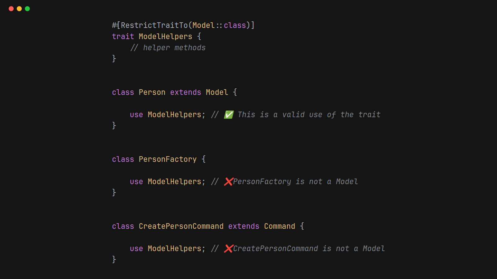

Some Traits are designed to be used for particular types of objects. E.g. you might have a trait that provides helper methods for entities in an ORM. Using a trait like this on something that isn't an entity is clearly wrong.
The #[RestrictTraitTo] enables a developer to communicate the type of object(s) the trait can be used on.
Consider the following example:
#[RestrictTraitTo(Model::class)]
trait ModelHelpers {
// helper methods
}
In the above example the #[RestrictTraitTo] attribute is telling us the ModelHelper trait can only be used on Model classes.
The following is OK:
class Person extends Model {
use ModelHelpers; // ✅ This is a valid use of the trait
}
However, the following are both bugs:
class PersonFactory {
use ModelHelpers; // ❌PersonFactory is not a Model
}
class CreatePersonCommand extends Command {
use ModelHelpers; // ❌CreatePersonCommand is not a Model
}
Summary
Personally I consider the usage of traits for application code a bit of a code smell. Traits should certainly be used sparingly. However, if you do use them, and their usage should be limited to a specific class, this is a useful attribute.
Other articles in this series
- Introducing the PHP Language Extensions Library
- Introducing the Friend attribute (example 1)
- Introducing the MustUseResult attribute
- Introducing the NamespaceVisibility attribute
- Introducing the TestTag attribute
- Introducing the RestrictTraitTo attribute
- Introducing the InjectableVersion attribute
- A static analysis first approach to RFCs